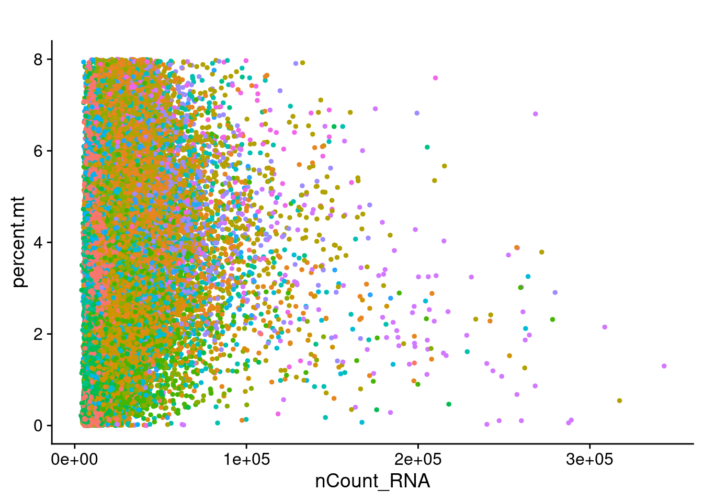
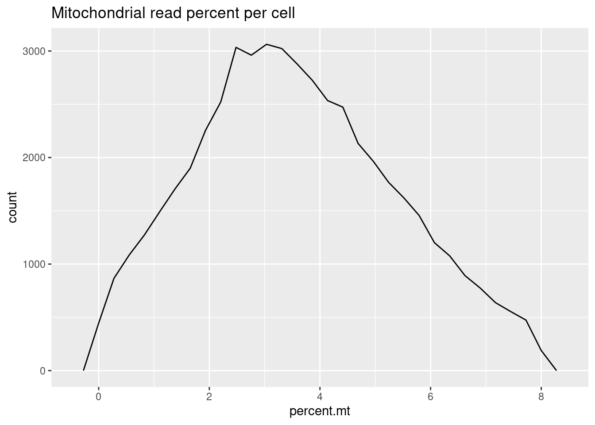

merge_full_data
Ben Umans
2021-07-28
Last updated: 2021-07-31
Checks: 7 0
Knit directory: Organoid_Stress_Pilot/
This reproducible R Markdown analysis was created with workflowr (version 1.6.2). The Checks tab describes the reproducibility checks that were applied when the results were created. The Past versions tab lists the development history.
Great! Since the R Markdown file has been committed to the Git repository, you know the exact version of the code that produced these results.
Great job! The global environment was empty. Objects defined in the global environment can affect the analysis in your R Markdown file in unknown ways. For reproduciblity it’s best to always run the code in an empty environment.
The command set.seed(20210705) was run prior to running the code in the R Markdown file. Setting a seed ensures that any results that rely on randomness, e.g. subsampling or permutations, are reproducible.
Great job! Recording the operating system, R version, and package versions is critical for reproducibility.
Nice! There were no cached chunks for this analysis, so you can be confident that you successfully produced the results during this run.
Great job! Using relative paths to the files within your workflowr project makes it easier to run your code on other machines.
Great! You are using Git for version control. Tracking code development and connecting the code version to the results is critical for reproducibility.
The results in this page were generated with repository version 5d8afa5. See the Past versions tab to see a history of the changes made to the R Markdown and HTML files.
Note that you need to be careful to ensure that all relevant files for the analysis have been committed to Git prior to generating the results (you can use wflow_publish or wflow_git_commit). workflowr only checks the R Markdown file, but you know if there are other scripts or data files that it depends on. Below is the status of the Git repository when the results were generated:
Ignored files:
Ignored: .DS_Store
Ignored: .Rhistory
Ignored: data/.DS_Store
Ignored: data/fastq/
Ignored: output/.DS_Store
Ignored: output/YG-BU-01_human/
Ignored: output/YG-BU-02_human/
Ignored: output/YG-BU-03_human/
Ignored: output/YG-BU-04_human/
Ignored: output/YG-BU-05_human/
Ignored: output/YG-BU-06_human/
Ignored: output/YG-BU-07_human/
Ignored: output/YG-BU-08_human/
Ignored: output/YG-BU-09_human/
Ignored: output/YG-BU-10_human/
Ignored: output/YG-BU-11_human/
Ignored: output/merged_full_dataset.RDS
Ignored: output/organoid.combined.full.sct.neuron.RDS
Ignored: output/organoid.combined.sct.neuron.markers.RDS
Ignored: output/organoid.combined.sct03.RDS
Ignored: output/organoid.combined.sct05.RDS
Ignored: output/organoid.combined.sct1.RDS
Untracked files:
Untracked: data/Snakefile_cellranger
Untracked: data/all.vcf.bed
Untracked: data/australia.rds
Untracked: data/cellranger.38.dict
Untracked: data/cluster.json
Untracked: data/config.yaml
Untracked: data/environment.yaml
Untracked: data/exclude_fulldata.rds
Untracked: data/human.unsorted.vcf
Untracked: data/human.vcf
Untracked: data/human.vcf.bed
Untracked: data/library9.rds
Untracked: data/log/
Untracked: data/mysterycell.rds
Untracked: data/organoid.combined.sct03.neuron.RDS
Untracked: data/organoid_combined_sct03.RDS
Untracked: data/reheaded.vcf
Untracked: data/snakelog.out
Untracked: data/snakemake_cellranger.batch
Untracked: data/sorted.vcf
Untracked: data/submit.sh
Untracked: data/unsorted.vcf
Untracked: data/unsorted_header
Untracked: data_S2/
Unstaged changes:
Modified: .gitignore
Modified: analysis/index.Rmd
Modified: analysis/precheck.Rmd
Modified: analysis/remove-mesenchyme.Rmd
Note that any generated files, e.g. HTML, png, CSS, etc., are not included in this status report because it is ok for generated content to have uncommitted changes.
These are the previous versions of the repository in which changes were made to the R Markdown (analysis/merge_full_data.Rmd) and HTML (docs/merge_full_data.html) files. If you’ve configured a remote Git repository (see ?wflow_git_remote), click on the hyperlinks in the table below to view the files as they were in that past version.
| File | Version | Author | Date | Message |
|---|---|---|---|---|
| Rmd | 5d8afa5 | Ben Umans | 2021-07-30 | Building all files for initial upload |
Introduction
I have now received more extensive sequencing data from these libraries and run the combined data (from the S1 and S2 chips) through cellranger together to generate combined data, and through demuxlet to resolve each library into the 3 constituent individuals. Here, I will combine the (now much larger) Seurat objects like before, integrate them, and create both a combined total object and a combined neural-specific object.
Combined Seurat objects
Helpfully, the demuxlet pipeline we have preprocesses each library with SCTransform and saves a Seurat object, so combining them in much easier.
pacman::p_load(edgeR, variancePartition, BiocParallel, limma)
library(Seurat)
library(tidyverse)
library(ggplot2)
library(RColorBrewer)
library(cowplot)
library(knitr)control1 <- readRDS(file = "data_S2/YG-BU-01_human/obj.rds")
#replace the names of all individuals with the actual line names
oldnames1 <- control1$individual
newnames1 <- str_replace(oldnames1, "SCM-10", "28126") %>% str_replace("SCM-12", "20157") %>% str_replace("SCM-13", "23555")
control1 <- AddMetaData(control1, newnames1, col.name = "cell.line")
control1$replicate <- "2"
control1$stim <- "control"
oxid1 <- readRDS(file = "data_S2/YG-BU-02_human/obj.rds")
#replace the names of all individuals with the actual line names
oldnames2 <- oxid1$individual
newnames2 <- str_replace(oldnames2, "SCM-10", "28126") %>% str_replace("SCM-12", "20157") %>% str_replace("SCM-13", "23555")
oxid1 <- AddMetaData(oxid1, newnames2, col.name = "cell.line")
oxid1$replicate <- "2"
oxid1$stim <- "oxidation"
pff1 <- readRDS(file = "data_S2/YG-BU-03_human/obj.rds")
#replace the names of all individuals with the actual line names
oldnames3 <- pff1$individual
newnames3 <- str_replace(oldnames3, "SCM-10", "28126") %>% str_replace("SCM-12", "20157") %>% str_replace("SCM-13", "23555")
pff1 <- AddMetaData(pff1, newnames3, col.name = "cell.line")
pff1$replicate <- "2"
pff1$stim <- "pff"
control2 <- readRDS(file = "data_S2/YG-BU-06_human/obj.rds")
#replace the names of all individuals with the actual line names
oldnames6 <- control2$individual
newnames6 <- str_replace(oldnames6, "SCM-10", "28126") %>% str_replace("SCM-12", "20157") %>% str_replace("SCM-13", "23555")
control2 <- AddMetaData(control2, newnames6, col.name = "cell.line")
control2$replicate <- "3"
control2$stim <- "control"
oxid2 <- readRDS(file = "data_S2/YG-BU-07_human/obj.rds")
#replace the names of all individuals with the actual line names
oldnames7 <- oxid2$individual
newnames7 <- str_replace(oldnames7, "SCM-10", "28126") %>% str_replace("SCM-12", "20157") %>% str_replace("SCM-13", "23555")
oxid2 <- AddMetaData(oxid2, newnames7, col.name = "cell.line")
oxid2$replicate <- "3"
oxid2$stim <- "oxidation"
control3 <- readRDS(file = "data_S2/YG-BU-09_human/obj.rds")
#replace the names of all individuals with the actual line names
oldnames9 <- control3$individual
newnames9 <- str_replace(oldnames9, "SCM-10", "28126") %>% str_replace("SCM-12", "20157") %>% str_replace("SCM-13", "23555")
control3 <- AddMetaData(control3, newnames9, col.name = "cell.line")
control3$replicate <- "4"
control3$stim <- "control"
oxid3 <- readRDS(file = "data_S2/YG-BU-10_human/obj.rds")
#replace the names of all individuals with the actual line names
oldnames10 <- oxid3$individual
newnames10 <- str_replace(oldnames10, "SCM-10", "28126") %>% str_replace("SCM-12", "20157") %>% str_replace("SCM-13", "23555")
oxid3 <- AddMetaData(oxid3, newnames10, col.name = "cell.line")
oxid3$replicate <- "4"
oxid3$stim <- "oxidation"
pff3 <- readRDS(file = "data_S2/YG-BU-11_human/obj.rds")
#replace the names of all individuals with the actual line names
oldnames11 <- pff3$individual
newnames11 <- str_replace(oldnames11, "SCM-10", "28126") %>% str_replace("SCM-12", "20157") %>% str_replace("SCM-13", "23555")
pff3 <- AddMetaData(pff3, newnames11, col.name = "cell.line")
pff3$replicate <- "4"
pff3$stim <- "oxidation"
combined.data <- list(control1, control2, control3, oxid1, oxid2, oxid3, pff1, pff3)
rm(control1, control2, control3, oxid1, oxid2, oxid3, pff1, pff3)Because each of these datasets was prepared using SCTransform it should be straightforward to now integrate them. Following the guide from the Satija lab for integrating these datasets, I run the following steps:
features <- SelectIntegrationFeatures(object.list = combined.data, nfeatures = 5000, verbose = F)
combined.data <- PrepSCTIntegration(object.list = combined.data, anchor.features = features)
organoid.anchors <- FindIntegrationAnchors(object.list = combined.data, normalization.method = "SCT",
anchor.features = features)Warning in CheckDuplicateCellNames(object.list = object.list): Some cell
names are duplicated across objects provided. Renaming to enforce unique
cell names.Finding all pairwise anchorsRunning CCAMerging objectsFinding neighborhoodsFinding anchors Found 11409 anchorsFiltering anchors Retained 10721 anchorsExtracting within-dataset neighborsRunning CCAMerging objectsFinding neighborhoodsFinding anchors Found 13717 anchorsFiltering anchors Retained 11711 anchorsExtracting within-dataset neighborsRunning CCAMerging objectsFinding neighborhoodsFinding anchors Found 13454 anchorsFiltering anchors Retained 10663 anchorsExtracting within-dataset neighborsRunning CCAMerging objectsFinding neighborhoodsFinding anchors Found 13267 anchorsFiltering anchors Retained 12681 anchorsExtracting within-dataset neighborsRunning CCAMerging objectsFinding neighborhoodsFinding anchors Found 11149 anchorsFiltering anchors Retained 9970 anchorsExtracting within-dataset neighborsRunning CCAMerging objectsFinding neighborhoodsFinding anchors Found 16234 anchorsFiltering anchors Retained 14731 anchorsExtracting within-dataset neighborsRunning CCAMerging objectsFinding neighborhoodsFinding anchors Found 11270 anchorsFiltering anchors Retained 10846 anchorsExtracting within-dataset neighborsRunning CCAMerging objectsFinding neighborhoodsFinding anchors Found 11293 anchorsFiltering anchors Retained 10894 anchorsExtracting within-dataset neighborsRunning CCAMerging objectsFinding neighborhoodsFinding anchors Found 13226 anchorsFiltering anchors Retained 12172 anchorsExtracting within-dataset neighborsRunning CCAMerging objectsFinding neighborhoodsFinding anchors Found 11707 anchorsFiltering anchors Retained 11115 anchorsExtracting within-dataset neighborsRunning CCAMerging objectsFinding neighborhoodsFinding anchors Found 13569 anchorsFiltering anchors Retained 11729 anchorsExtracting within-dataset neighborsRunning CCAMerging objectsFinding neighborhoodsFinding anchors Found 13473 anchorsFiltering anchors Retained 11179 anchorsExtracting within-dataset neighborsRunning CCAMerging objectsFinding neighborhoodsFinding anchors Found 23613 anchorsFiltering anchors Retained 21580 anchorsExtracting within-dataset neighborsRunning CCAMerging objectsFinding neighborhoodsFinding anchors Found 16034 anchorsFiltering anchors Retained 14021 anchorsExtracting within-dataset neighborsRunning CCAMerging objectsFinding neighborhoodsFinding anchors Found 13611 anchorsFiltering anchors Retained 11640 anchorsExtracting within-dataset neighborsRunning CCAMerging objectsFinding neighborhoodsFinding anchors Found 13080 anchorsFiltering anchors Retained 12460 anchorsExtracting within-dataset neighborsRunning CCAMerging objectsFinding neighborhoodsFinding anchors Found 11084 anchorsFiltering anchors Retained 9993 anchorsExtracting within-dataset neighborsRunning CCAMerging objectsFinding neighborhoodsFinding anchors Found 16385 anchorsFiltering anchors Retained 15016 anchorsExtracting within-dataset neighborsRunning CCAMerging objectsFinding neighborhoodsFinding anchors Found 14667 anchorsFiltering anchors Retained 13917 anchorsExtracting within-dataset neighborsRunning CCAMerging objectsFinding neighborhoodsFinding anchors Found 11324 anchorsFiltering anchors Retained 10227 anchorsExtracting within-dataset neighborsRunning CCAMerging objectsFinding neighborhoodsFinding anchors Found 15696 anchorsFiltering anchors Retained 14487 anchorsExtracting within-dataset neighborsRunning CCAMerging objectsFinding neighborhoodsFinding anchors Found 12588 anchorsFiltering anchors Retained 11458 anchorsExtracting within-dataset neighborsRunning CCAMerging objectsFinding neighborhoodsFinding anchors Found 12440 anchorsFiltering anchors Retained 11021 anchorsExtracting within-dataset neighborsRunning CCAMerging objectsFinding neighborhoodsFinding anchors Found 18379 anchorsFiltering anchors Retained 17075 anchorsExtracting within-dataset neighborsRunning CCAMerging objectsFinding neighborhoodsFinding anchors Found 13519 anchorsFiltering anchors Retained 12186 anchorsExtracting within-dataset neighborsRunning CCAMerging objectsFinding neighborhoodsFinding anchors Found 11959 anchorsFiltering anchors Retained 10630 anchorsExtracting within-dataset neighborsRunning CCAMerging objectsFinding neighborhoodsFinding anchors Found 18284 anchorsFiltering anchors Retained 17215 anchorsExtracting within-dataset neighborsRunning CCAMerging objectsFinding neighborhoodsFinding anchors Found 13408 anchorsFiltering anchors Retained 12039 anchorsExtracting within-dataset neighborsorganoid.combined.sct <- IntegrateData(anchorset = organoid.anchors, normalization.method = "SCT")Merging dataset 5 into 3Extracting anchors for merged samplesFinding integration vectorsFinding integration vector weightsIntegrating dataMerging dataset 8 into 6Extracting anchors for merged samplesFinding integration vectorsFinding integration vector weightsIntegrating dataMerging dataset 4 into 3 5Extracting anchors for merged samplesFinding integration vectorsFinding integration vector weightsIntegrating dataMerging dataset 1 into 7Extracting anchors for merged samplesFinding integration vectorsFinding integration vector weightsIntegrating dataMerging dataset 7 1 into 3 5 4Extracting anchors for merged samplesFinding integration vectorsFinding integration vector weightsIntegrating dataMerging dataset 6 8 into 3 5 4 7 1Extracting anchors for merged samplesFinding integration vectorsFinding integration vector weightsIntegrating dataMerging dataset 2 into 3 5 4 7 1 6 8Extracting anchors for merged samplesFinding integration vectorsFinding integration vector weightsIntegrating dataWarning: Adding a command log without an assay associated with itDefaultAssay(organoid.combined.sct) <- "integrated"
rm(combined.data)Evaluate QC for further filtering
The pre-processing script already subsetted to less than 15% mitochondrial reads, but this is still pretty liberal.
FeatureScatter(organoid.combined.sct, feature1 = "nCount_RNA", feature2 = "percent.mt") + theme(legend.position = "none") + ggtitle("")
FeatureScatter(organoid.combined.sct, feature1 = "nCount_RNA", feature2 = "nFeature_RNA") + theme(legend.position = "none") + ggtitle("")
FeatureScatter(organoid.combined.sct, feature1 = "nFeature_RNA", feature2 = "percent.mt") + theme(legend.position = "none") + ggtitle("")
organoid.combined.sct@meta.data %>%
ggplot(aes(x=percent.mt)) +
geom_freqpoly() +
ggtitle("Mitochondrial read percent per cell") 15% is not a terrible cutoff, but we could easily do 8% and not lose anything worth missing. Let’s also check the number of genes detected, understanding that with low-pass sequencing there’s a lot less data here.
organoid.combined.sct@meta.data %>%
ggplot(aes(x=nFeature_RNA)) +
geom_freqpoly() +
ggtitle("Number of genes per cell")`stat_bin()` using `bins = 30`. Pick better value with `binwidth`.We could set a minimum threshold of 2500 genes/cell to be safe. This would certainly hit some clusters, which might actually be synthetic owing to their low gene counts
organoid.combined.sct <- subset(organoid.combined.sct, subset = percent.mt < 8 & nFeature_RNA > 2500 )Dimensionality reduction and clustering
Now, I go ahead and perform dimensionality reduction and clustering using the integrated dataset.
organoid.combined.sct <- RunPCA(organoid.combined.sct, npcs = 100)PC_ 1
Positive: COL1A1, MGP, COL3A1, LGALS1, VIM, NEAT1, COL1A2, SPARC, TIMP1, PTN
COL11A1, SFRP2, S100A10, TPM2, TPT1, IFITM3, FN1, S100A11, LDHA, CLU
OGN, FOXP2, RPL41, BNC2, PRKG1, IGFBP5, NDUFA4L2, ANXA2, TAGLN, RPLP1
Negative: STMN2, CADM2, LRRC7, RBFOX1, NRXN1, MYT1L, SYT1, SLC44A5, CCSER1, DLGAP1
CTNNA2, PTPRD, ANKS1B, DSCAM, LRRTM4, DAB1, NKAIN2, ARPP21, TUBB3, GPM6A
SOX11, OPCML, NTM, CELF2, DCX, TUBA1A, DLG2, BHLHE22, TMEM108, RTN1
PC_ 2
Positive: COL1A1, MGP, COL3A1, LGALS1, RBFOX1, COL1A2, TIMP1, STMN2, SFRP2, LRRC7
SPARC, TPM2, OGN, FN1, FOXP2, KCNQ1OT1, ARPP21, S100A11, BNC2, POSTN
NDUFA4L2, DAB1, NELL2, NKAIN2, TAGLN, TPT1, KCNQ5, FBLN1, LDHA, S100A10
Negative: AL589740.1, LINC01965, CKB, C1orf61, NKAIN3, KCNH7, PTPRZ1, CENPF, ADGRV1, SYNE2
SHROOM3, SOX2, HMGB2, TOP2A, KCNIP4, NPAS3, NUSAP1, DACH1, GFAP, MKI67
NFIA, TUBA1B, DIAPH3, GPM6B, ZBTB20, SMC4, MPPED2, DBI, QKI, DLEU2
PC_ 3
Positive: KCNQ3, SOX11, EPHA3, AL589740.1, SEMA3C, UNC5D, DOK6, CASC15, ZNF704, MLLT3
PLXNA2, MEIS2, CADM2, SOX4, PANTR1, AUTS2, CUX2, ZNF804A, PLCB1, GRAMD1B
DLEU2, SORBS2, SEZ6L, NRXN1, FRMD4A, HES6, PALMD, IGFBPL1, CDH4, TTC28
Negative: NRG3, FABP7, PCDH9, CLU, GFAP, PTPRZ1, DLG2, CSMD1, NPAS3, MEF2C
GPM6B, GRIN2B, RGS6, CKB, BCAN, METRN, C1orf61, IQCJ-SCHIP1, KAZN, DBI
MGAT4C, CSMD3, SLC35F1, GRM5, MDGA2, TTYH1, RYR2, BAALC, KHDRBS2, DAB1
PC_ 4
Positive: C1orf61, GFAP, CLU, GPM6B, BCAN, KCNQ3, NRG1, AL589740.1, SEMA3C, KCNN3
BAALC, EPHA3, METRN, TTYH1, ATP1B2, SOX11, CNN3, CKB, AQP4, PTPRZ1
NPAS3, SORBS2, EZR, DBI, AP1S2, GPR158, MEIS2, UNC5D, ID4, CRYAB
Negative: TOP2A, HMGB2, MKI67, NUSAP1, CENPF, TPX2, DIAPH3, SMC4, ASPM, KNL1
DLG2, CDK1, PRC1, DLGAP5, UBE2C, CENPE, APOLD1, GTSE1, KIF11, TUBA1B
COL1A1, KIF18B, NDC80, PTTG1, SPC25, PBK, BIRC5, KIF15, HIST1H4C, RRM2
PC_ 5
Positive: ROBO2, CNTNAP5, SOX4, DCC, NRXN3, BCL11B, DPP10, RALYL, GRIK2, GRM5
NLGN1, MARCH1, PCDH9, CNTNAP2, DOK6, TRPM3, CSMD3, PEX5L, MDGA2, DSCAML1
KCNIP4, SORCS1, KAZN, NFIA, ANK3, KCNH7, NEGR1, GRIA2, SLC24A2, SOX5
Negative: SATB2, SLC44A5, FABP7, CUX2, NKAIN2, HS6ST3, TAFA1, DLGAP2, RBFOX1, BHLHE22
PLXNA4, DPYD, FGF12, MCTP1, CCSER1, MGAT4C, SYT4, DAB1, SATB2-AS1, TENM4
ARPP21, KIF26B, ZBTB18, CDH4, DOK5, LRRC7, MIR137HG, PTPRZ1, SNTG1, CLU organoid.combined.sct <- RunUMAP(organoid.combined.sct, reduction = "pca", dims = 1:100)Warning: The default method for RunUMAP has changed from calling Python UMAP via reticulate to the R-native UWOT using the cosine metric
To use Python UMAP via reticulate, set umap.method to 'umap-learn' and metric to 'correlation'
This message will be shown once per session04:02:17 UMAP embedding parameters a = 0.9922 b = 1.11204:02:17 Read 50978 rows and found 100 numeric columns04:02:17 Using Annoy for neighbor search, n_neighbors = 3004:02:17 Building Annoy index with metric = cosine, n_trees = 500% 10 20 30 40 50 60 70 80 90 100%[----|----|----|----|----|----|----|----|----|----|**************************************************|
04:02:31 Writing NN index file to temp file /tmp/RtmpbzcQQZ/file12eb6238795ff
04:02:31 Searching Annoy index using 1 thread, search_k = 3000
04:02:50 Annoy recall = 100%
04:02:54 Commencing smooth kNN distance calibration using 1 thread
04:02:56 Initializing from normalized Laplacian + noise
04:03:03 Commencing optimization for 200 epochs, with 2357470 positive edges
04:04:02 Optimization finishedFeaturePlot(organoid.combined.sct, features = c("rna_PAX6", "rna_MAP2"), max.cutoff = 50)DimPlot(organoid.combined.sct, reduction = "umap", group.by = "stim")DimPlot(organoid.combined.sct, reduction = "umap", group.by = "replicate")And now we can look for clusters:
organoid.combined.sct <- FindNeighbors(organoid.combined.sct, dims=1:100)
organoid.combined.sct <- FindClusters(organoid.combined.sct, resolution=0.3)Modularity Optimizer version 1.3.0 by Ludo Waltman and Nees Jan van Eck
Number of nodes: 50978
Number of edges: 2509805
Running Louvain algorithm...
Maximum modularity in 10 random starts: 0.9473
Number of communities: 17
Elapsed time: 15 secondsDimPlot(organoid.combined.sct, reduction = "umap") + ggtitle("resolution=0.3")
This is a good time to save this output.
saveRDS(organoid.combined.sct, file = "output/merged_full_dataset.RDS")Filter to just neurons
Once again, I want to check that that large cluster isn’t something I want to hold onto. Markers that Genevieve uses for chondrogenic differentiation include:
FeaturePlot(organoid.combined.sct, features = c("COL2A1", "SOX5", "SOX6", "ACAN"))
Yikes!! One pole of this cell cluster still looks pretty mesenchymal, with particularly high expression of collagen 2 and aggregan, which could mean any number of things.
At the other end of this cluster I definitely saw expression of some glial genes, for instance:
FeaturePlot(organoid.combined.sct, features = c("APOE"))
What could be going on here? Neural crest that started to differentiate? Consider looking at the CNCC marker trajectory that Sara Prescott worked out for her human-chimp paper, which was mostly designed for FACS but found some good markers (CD99, CD266(TNFRSF12A), CD10(MME), CD105(ENG), p75(NGFR)).
FeaturePlot(organoid.combined.sct, features = c("sct_CD99", "sct_TNFRSF12A", "sct_MME", "sct_ENG", "sct_NGFR"))
FeaturePlot(organoid.combined.sct, features = c("sct_SOX10", "sct_TUBB3")) There’s pretty good expression of all of these in the non-chondrogenic lobe of the cluster. BUT, SOX10 is strongly expressed in that smaller separate cluster, which would tend to indicate those are bona fide NCC. Hmm!
There’s pretty good expression of all of these in the non-chondrogenic lobe of the cluster. BUT, SOX10 is strongly expressed in that smaller separate cluster, which would tend to indicate those are bona fide NCC. Hmm!
Any chance that these cells are microglia?
FeaturePlot(organoid.combined.sct, features = c("sct_MMP9", "sct_SALL1", "sct_P2RY12", "sct_TMEM119", "sct_CX3CR1"))FeaturePlot(organoid.combined.sct, features = c("sct_ITGAM", "sct_AIF1"), max.cutoff = 0.5) There’s some expression of MMP9, TMEM119, and a tiny bit of IBA1 throughout the cluster, but not in the APOE-positive area and not in the COL2A1/ACAN area.
There’s some expression of MMP9, TMEM119, and a tiny bit of IBA1 throughout the cluster, but not in the APOE-positive area and not in the COL2A1/ACAN area.
This cluster is probably not homogenously any one cell type, but it’s not neuronal.
# p1 <- DimPlot(organoid.combined.sct)
# select.cells <- CellSelector(plot = p1)
# saveRDS(select.cells, "data/exclude_fulldata.rds")
select.cells <- readRDS(file = "data/exclude_fulldata.rds")
organoid.combined.sct.neuron <- subset(organoid.combined.sct, cells = select.cells, invert=TRUE)
DimPlot(organoid.combined.sct, cells.highlight = select.cells)saveRDS(organoid.combined.sct.neuron, file = "output/organoid.combined.full.sct.neuron.RDS")Now recluster with this reduced dataset
organoid.combined.sct.neuron <- RunPCA(organoid.combined.sct.neuron, npcs = 100)
organoid.combined.sct.neuron <- RunUMAP(organoid.combined.sct.neuron, reduction = "pca", dims = 1:100)
DimPlot(organoid.combined.sct.neuron, reduction = "umap", group.by = "stim")
DimPlot(organoid.combined.sct.neuron, reduction = "umap", group.by = "replicate")
organoid.combined.sct.neuron <- FindNeighbors(organoid.combined.sct.neuron, dims=1:100)
organoid.combined.sct.neuron <- FindClusters(organoid.combined.sct.neuron, resolution=0.3)
DimPlot(organoid.combined.sct.neuron, reduction = "umap") + ggtitle("resolution=0.3")
organoid.combined.sct.neuron.markers <- FindAllMarkers(organoid.combined.sct.neuron, only.pos = TRUE, min.pct = 0.25, logfc.threshold = 0.25)
saveRDS(organoid.combined.sct.neuron.markers, file="output/organoid.combined.sct.neuron.markers.RDS")
organoid.combined.sct.neuron.markers %>% group_by(cluster) %>% top_n(n = 5, wt = avg_logFC) %>% kable()
#saveRDS(organoid.combined.sct.neuron, file = "data/organoid.combined.full.sct.neuron.RDS")
# organoid.combined.sct.neuron <- readRDS(file = "data/organoid.combined.full.sct.neuron.RDS")The relevant output of the above markers and the cluster-labeled UMAP representation:
organoid.combined.sct.neuron.markers <- readRDS(file="output/organoid.combined.sct.neuron.markers.RDS")
DimPlot(organoid.combined.sct.neuron, reduction = "umap") + ggtitle("resolution=0.3")
organoid.combined.sct.neuron.markers %>% group_by(cluster) %>% top_n(n = 5, wt = avg_logFC) %>% kable()| p_val | avg_logFC | pct.1 | pct.2 | p_val_adj | cluster | gene |
|---|---|---|---|---|---|---|
| 0.0000000 | 6.892666 | 0.893 | 0.260 | 0.0000000 | 0 | DPY19L1 |
| 0.0000000 | 6.468132 | 0.819 | 0.298 | 0.0000000 | 0 | ADRA2A |
| 0.0000000 | 6.284193 | 0.873 | 0.377 | 0.0000000 | 0 | PRKX |
| 0.0000000 | 5.669388 | 0.950 | 0.476 | 0.0000000 | 0 | PTPN4 |
| 0.0000000 | 6.027549 | 0.538 | 0.336 | 0.0000000 | 0 | AC105916.1 |
| 0.0000000 | 10.800391 | 0.821 | 0.181 | 0.0000000 | 1 | SYBU |
| 0.0000000 | 8.366472 | 0.857 | 0.282 | 0.0000000 | 1 | GPR85 |
| 0.0000000 | 7.388974 | 0.587 | 0.074 | 0.0000000 | 1 | CELF2-DT |
| 0.0000000 | 7.292979 | 0.972 | 0.436 | 0.0000000 | 1 | R3HDM1 |
| 0.0000000 | 7.249213 | 0.984 | 0.605 | 0.0000000 | 1 | ADD2 |
| 0.0000000 | 9.614571 | 0.678 | 0.466 | 0.0000000 | 2 | AC053513.1 |
| 0.0000000 | 8.793939 | 0.740 | 0.126 | 0.0000000 | 2 | CITED1 |
| 0.0000000 | 8.688715 | 0.433 | 0.099 | 0.0000000 | 2 | SFRP4 |
| 0.0000000 | 8.224377 | 0.487 | 0.113 | 0.0000000 | 2 | GAPDH |
| 0.0000000 | 9.378618 | 0.287 | 0.176 | 0.0000000 | 2 | ERO1A |
| 0.0000000 | 7.749870 | 0.847 | 0.541 | 0.0000000 | 3 | RAPGEF2 |
| 0.0000000 | 7.440431 | 0.774 | 0.541 | 0.0000000 | 3 | DDX3Y |
| 0.0000000 | 7.162033 | 0.604 | 0.393 | 0.0000000 | 3 | ERO1B |
| 0.0000000 | 9.436481 | 0.298 | 0.141 | 0.0000000 | 3 | TSPYL2 |
| 0.0000000 | 7.467664 | 0.352 | 0.180 | 0.0000000 | 3 | IL12RB2 |
| 0.0000000 | 10.142848 | 0.990 | 0.206 | 0.0000000 | 4 | FANCI |
| 0.0000000 | 9.293580 | 0.957 | 0.120 | 0.0000000 | 4 | BRCA2 |
| 0.0000000 | 8.976039 | 0.940 | 0.134 | 0.0000000 | 4 | BLM |
| 0.0000000 | 8.781641 | 0.948 | 0.081 | 0.0000000 | 4 | MYBL2 |
| 0.0000000 | 8.632552 | 0.982 | 0.111 | 0.0000000 | 4 | RAD51AP1 |
| 0.0000000 | 12.531469 | 0.711 | 0.013 | 0.0000000 | 5 | SERPINA3 |
| 0.0000000 | 12.460638 | 0.715 | 0.024 | 0.0000000 | 5 | WDR38 |
| 0.0000000 | 12.151465 | 0.791 | 0.021 | 0.0000000 | 5 | C7orf57 |
| 0.0000000 | 11.898922 | 0.693 | 0.046 | 0.0000000 | 5 | C11orf88 |
| 0.0000000 | 12.056751 | 0.530 | 0.015 | 0.0000000 | 5 | MS4A8 |
| 0.0000000 | 10.278164 | 0.997 | 0.600 | 0.0000000 | 6 | WASF1 |
| 0.0000000 | 10.104331 | 0.859 | 0.293 | 0.0000000 | 6 | SATB1 |
| 0.0000000 | 8.843072 | 0.907 | 0.261 | 0.0000000 | 6 | MAL2 |
| 0.0000000 | 8.516076 | 0.842 | 0.389 | 0.0000000 | 6 | HECW2 |
| 0.0000000 | 9.887219 | 0.270 | 0.055 | 0.0000000 | 6 | VRK2 |
| 0.0000000 | 7.257082 | 0.972 | 0.404 | 0.0000000 | 7 | RBPJ |
| 0.0000000 | 6.882316 | 0.550 | 0.144 | 0.0000000 | 7 | GAS2 |
| 0.0000000 | 6.253624 | 0.383 | 0.151 | 0.0000000 | 7 | AC078881.1 |
| 0.0000000 | 6.065486 | 0.815 | 0.685 | 0.0000000 | 7 | PPP1R9A |
| 0.0000539 | 7.637421 | 0.529 | 0.562 | 0.2692528 | 7 | GALNT8 |
| 0.0000000 | 9.920117 | 0.955 | 0.531 | 0.0000000 | 8 | SCLT1 |
| 0.0000000 | 9.713181 | 0.931 | 0.165 | 0.0000000 | 8 | PARPBP |
| 0.0000000 | 9.432273 | 0.977 | 0.097 | 0.0000000 | 8 | TROAP |
| 0.0000000 | 8.916473 | 0.940 | 0.092 | 0.0000000 | 8 | TTK |
| 0.0000000 | 8.695318 | 0.894 | 0.127 | 0.0000000 | 8 | FAM83D |
| 0.0000000 | 6.672513 | 0.959 | 0.750 | 0.0000000 | 9 | SLAIN1 |
| 0.0000000 | 6.592629 | 0.329 | 0.107 | 0.0000000 | 9 | TNN |
| 0.0000000 | 7.664381 | 0.718 | 0.339 | 0.0000000 | 9 | MTUS1 |
| 0.0000000 | 7.321903 | 0.566 | 0.286 | 0.0000000 | 9 | AC090241.2 |
| 0.0000000 | 7.791721 | 0.393 | 0.224 | 0.0000000 | 9 | RAP2C-AS1 |
| 0.0000000 | 7.995611 | 0.840 | 0.064 | 0.0000000 | 10 | GATA3-AS1 |
| 0.0000000 | 8.192247 | 0.631 | 0.041 | 0.0000000 | 10 | GATA3 |
| 0.0000000 | 9.055618 | 0.652 | 0.144 | 0.0000000 | 10 | NR2F2 |
| 0.0000000 | 12.871942 | 0.464 | 0.040 | 0.0000000 | 10 | SMIM32 |
| 0.0000000 | 7.304059 | 0.764 | 0.553 | 0.0000000 | 10 | CDKN2D |
| 0.0000000 | 10.992154 | 0.885 | 0.108 | 0.0000000 | 11 | LGR4 |
| 0.0000000 | 10.700430 | 0.344 | 0.080 | 0.0001744 | 11 | SEMA5A |
| 0.0000007 | 11.301041 | 0.393 | 0.145 | 0.0035772 | 11 | LGI4 |
| 0.0000141 | 11.596306 | 0.262 | 0.050 | 0.0704529 | 11 | EGFLAM |
| 0.0012444 | 11.650612 | 0.295 | 0.117 | 1.0000000 | 11 | ANO2 |
sessionInfo()R version 3.6.1 (2019-07-05)
Platform: x86_64-pc-linux-gnu (64-bit)
Running under: Scientific Linux 7.4 (Nitrogen)
Matrix products: default
BLAS/LAPACK: /software/openblas-0.2.19-el7-x86_64/lib/libopenblas_haswellp-r0.2.19.so
locale:
[1] LC_CTYPE=en_US.UTF-8 LC_NUMERIC=C
[3] LC_TIME=en_US.UTF-8 LC_COLLATE=en_US.UTF-8
[5] LC_MONETARY=en_US.UTF-8 LC_MESSAGES=en_US.UTF-8
[7] LC_PAPER=en_US.UTF-8 LC_NAME=C
[9] LC_ADDRESS=C LC_TELEPHONE=C
[11] LC_MEASUREMENT=en_US.UTF-8 LC_IDENTIFICATION=C
attached base packages:
[1] parallel stats graphics grDevices utils datasets methods
[8] base
other attached packages:
[1] knitr_1.23 cowplot_1.0.0
[3] RColorBrewer_1.1-2 forcats_0.5.1
[5] stringr_1.4.0 dplyr_1.0.7
[7] purrr_0.3.4 readr_1.4.0
[9] tidyr_1.1.3 tibble_3.1.2
[11] tidyverse_1.3.1 Seurat_3.1.3
[13] BiocParallel_1.18.0 variancePartition_1.14.1
[15] Biobase_2.44.0 BiocGenerics_0.30.0
[17] scales_1.1.1 foreach_1.5.1
[19] ggplot2_3.3.5 edgeR_3.26.5
[21] limma_3.40.6 workflowr_1.6.2
loaded via a namespace (and not attached):
[1] readxl_1.3.1 backports_1.2.1 plyr_1.8.6
[4] igraph_1.2.4.1 lazyeval_0.2.2 splines_3.6.1
[7] listenv_0.7.0 digest_0.6.27 htmltools_0.5.1.1
[10] gdata_2.18.0 fansi_0.5.0 magrittr_2.0.1
[13] cluster_2.1.0 doParallel_1.0.14 ROCR_1.0-7
[16] globals_0.12.4 modelr_0.1.8 RcppParallel_5.1.4
[19] prettyunits_1.1.1 colorspace_2.0-2 rvest_1.0.0
[22] rappdirs_0.3.1 ggrepel_0.8.1 haven_2.3.1
[25] xfun_0.24 crayon_1.4.1 jsonlite_1.7.2
[28] lme4_1.1-21 survival_3.2-11 zoo_1.8-6
[31] iterators_1.0.13 ape_5.4-1 glue_1.4.2
[34] gtable_0.3.0 leiden_0.3.1 future.apply_1.3.0
[37] DBI_1.1.0 bibtex_0.4.2 Rcpp_1.0.6
[40] metap_1.1 viridisLite_0.3.0 progress_1.2.2
[43] reticulate_1.16 rsvd_1.0.1 tsne_0.1-3
[46] htmlwidgets_1.5.3 httr_1.4.2 gplots_3.0.1.1
[49] ellipsis_0.3.2 ica_1.0-2 farver_2.1.0
[52] pkgconfig_2.0.3 uwot_0.1.5 dbplyr_2.1.1
[55] locfit_1.5-9.1 utf8_1.1.4 labeling_0.4.2
[58] tidyselect_1.1.0 rlang_0.4.11 reshape2_1.4.4
[61] later_1.2.0 cellranger_1.1.0 munsell_0.5.0
[64] tools_3.6.1 cli_2.5.0 generics_0.1.0
[67] pacman_0.5.1 broom_0.7.8 ggridges_0.5.1
[70] evaluate_0.14 yaml_2.2.1 npsurv_0.4-0
[73] fs_1.3.1 fitdistrplus_1.0-14 caTools_1.17.1.2
[76] RANN_2.6.1 pbapply_1.4-0 future_1.14.0
[79] nlme_3.1-140 whisker_0.3-2 xml2_1.3.2
[82] rstudioapi_0.13 compiler_3.6.1 pbkrtest_0.4-7
[85] plotly_4.9.4.1 png_0.1-7 lsei_1.2-0
[88] reprex_2.0.0 stringi_1.6.2 highr_0.8
[91] RSpectra_0.15-0 lattice_0.20-38 Matrix_1.2-18
[94] nloptr_1.2.2.1 vctrs_0.3.8 pillar_1.6.1
[97] lifecycle_1.0.0 Rdpack_0.11-0 lmtest_0.9-37
[100] RcppAnnoy_0.0.12 data.table_1.14.0 bitops_1.0-6
[103] irlba_2.3.3 gbRd_0.4-11 httpuv_1.6.1
[106] colorRamps_2.3 R6_2.5.0 promises_1.2.0.1
[109] KernSmooth_2.23-15 gridExtra_2.3 codetools_0.2-16
[112] boot_1.3-23 MASS_7.3-51.4 gtools_3.8.1
[115] assertthat_0.2.1 rprojroot_2.0.2 withr_2.4.2
[118] sctransform_0.2.0 hms_1.1.0 grid_3.6.1
[121] minqa_1.2.4 rmarkdown_1.13 Rtsne_0.15
[124] git2r_0.26.1 lubridate_1.7.10